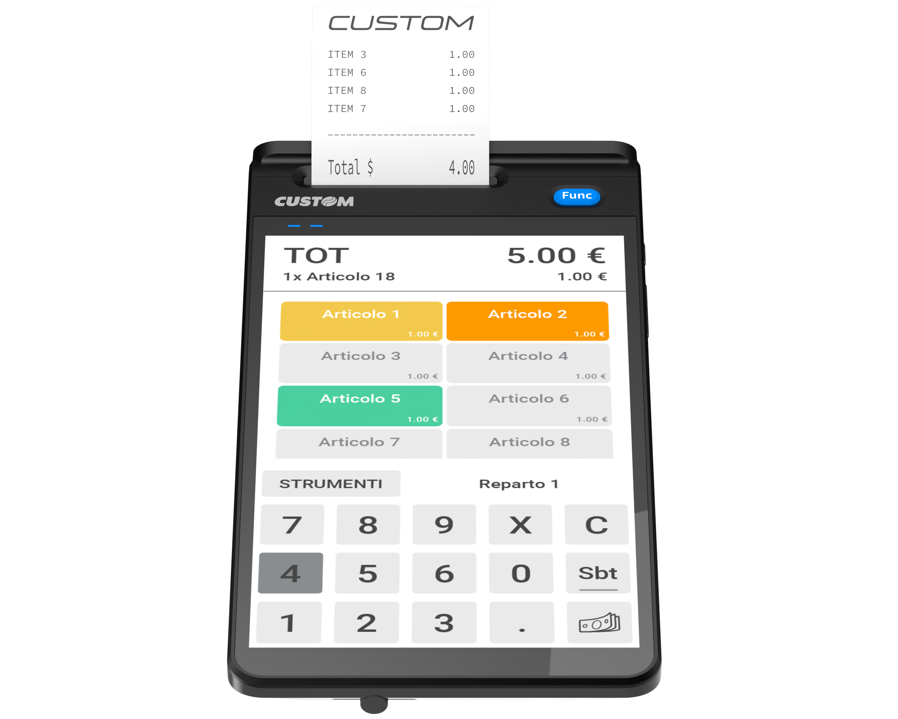

EDGE N e N+
Obiettivo del portale
Questo portale documentale ha l'obiettivo di fornire le competenze tecniche necessarie per l'installazione, la configurazione e la manutenzione dei dispositivi telematici di Custom S.p.A. della serie EDGE.
Siamo convinti che con questo metodo di condivisione delle conoscenze, tramite sito dedicato, saremo in grado di soddisfare le necessità operative di voi Partners, con l'intento di mantenere costantemente aggiornata la documentazione ed offrendo un canale di comunicazione rapido, efficace e di facile consultazione.

In questo spazio analizziamo l'intera architettura hardware e software: partendo dalle caratteristiche hardware dei dispositivi, passando per le specifiche normative RT XML 7 Versione 11.1 dell'Agenzia delle Entrate, continuando con le configurazioni di rete per il corretto adempimento degli obblighi telematici, fino alle best practice di intervento e al troubleshooting.
La formazione si concentrerà inoltre sull'utilizzo dei registratori telematici Edge N / N+ in abbinamento con il software di frontend KEEPUP SMART, con particolare attenzione alla configurazione di Edge N+ per pagamenti digitali tramite applicativo SOFTPOS in convenzione con CUSTOM PAY.
Trattandosi di device "All-in-One" molto evoluti, il portale non si limiterà alla sola parte fiscale, ma affronterà l'architettura di sistema e le logiche di rete.
La Visione Commerciale e le Novità (Analisi EDGE-N vs EDGE-N+)
Ad ogni necessità corrisponde il registratore telematico corretto
Per questo motivo è importante conoscere le caratteristiche della famiglia EDGE ed il salto generazionale tra la versione N e la versione N+.
Il concetto "All-in-One": Unione di un PC POS Mobile e un RT in un design compatto per entrambi i modelli, nel pieno rispetto dell'ultima normativa Xml 7 V.11.1, sono fondamentali per indirizzare il corretto esercente verso la serie Edge.
Mercati di riferimento
- Minimarket: Form factor compatto All-in-One ideale per banchi cassa con spazio limitato e necessità di collegamento diretto a scanner barcode USB.
- Retail Tradizionale: Architettura LAN cablata (Ethernet RJ45) che garantisce la massima stabilità nella trasmissione telematica XML dei corrispettivi.
- Forni e Pasticcerie: Interfaccia Touchscreen capacitiva industriale adatta a ritmi di digitazione elevati e facile sanificazione del pannello frontale.
- Negozi di prossimità: Soluzione che integra RT e logica applicativa eliminando la necessità di PC dedicati e riducendo i punti di guasto hardware (SPOF).
- Ambulanti Evoluti: Operatività in mobilità garantita da batteria Li-Ion sostituibile, connettività 4G/LTE nativa e display ad alta luminosità per uso esterno.
Caratteristiche Hardware EDGE-N:
Il modello di partenza è basato su sistema operativo Android 12, dotato di 2 GB di RAM DDR e 16 GB di memoria flash eMMC. Dispone di un monitor touch da 8", NFC integrato e una velocità di stampa di 80 mm/sec.
L'evoluzione di EDGE-N+:
Questo modello potenzia l'hardware passando ad Android 13 con certificazione GMS (Google Mobile Services) e aggiornamenti OTA. La memoria raddoppia a 4 GB RAM / 64 GB flash e la velocità di stampa sale a 120 mm/sec.
Rivoluzione SoftPOS:
L'adozione del sistema operativo Android 13 sull'EDGE-N+ rappresenta un salto generazionale cruciale, in quanto il dispositivo vanta la certificazione ufficiale GMS (Google Mobile Services). Questa integrazione certificata direttamente da Google trasforma il registratore telematico in un vero e proprio ecosistema mobile avanzato, garantendo la piena compatibilità e stabilità con le più moderne applicazioni (come quelle indispensabili per gestire i pagamenti elettronici integrati tramite tecnologia SoftPOS) e assicurando la ricezione automatica degli aggiornamenti critici e di sicurezza in modalità OTA (Over The Air), mantenendo così la macchina costantemente protetta, aggiornata e performante nel tempo senza richiedere complessi interventi manuali.
Sintesi hardware
| CUSTOM EDGE N+ |
CUSTOM EDGE N |
|---|---|
|
 |
| Core: Android™ 13 (Hexa-Core) | Core: Android™ 12 (Quad-Core) |
| Connettività: Wi-Fi, 4G, BT, Eth | Connettività: Wi-Fi, 4G, BT, Eth |
| Innovazione: Predisposto SoftPOS (NFC Avanzato) | Mobilità: Ottimizzato per uso ambulante |
| Target: App intensive e terze parti | Target: Standard Retail e KeepUp |
| RT: Nativo V11.1 (Crypto-chip) | RT: Nativo V11.1 (Crypto-chip) |
| Scarica qui la scheda prodotto di Edge N | Scarica qui la scheda prodotto di Edge N |